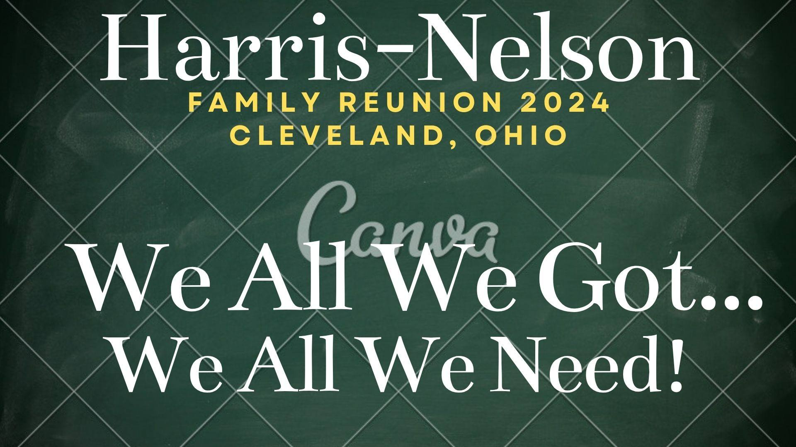
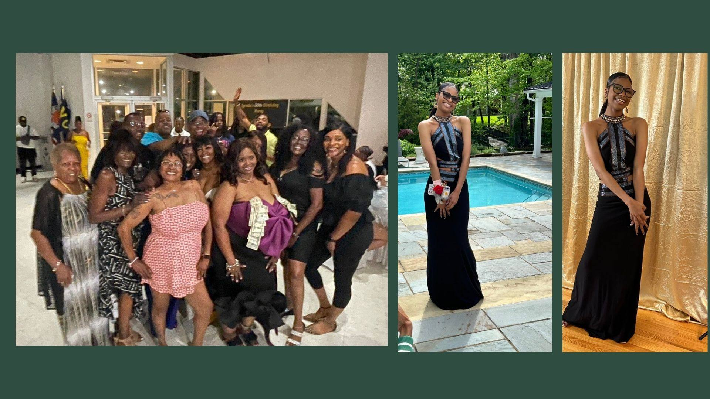
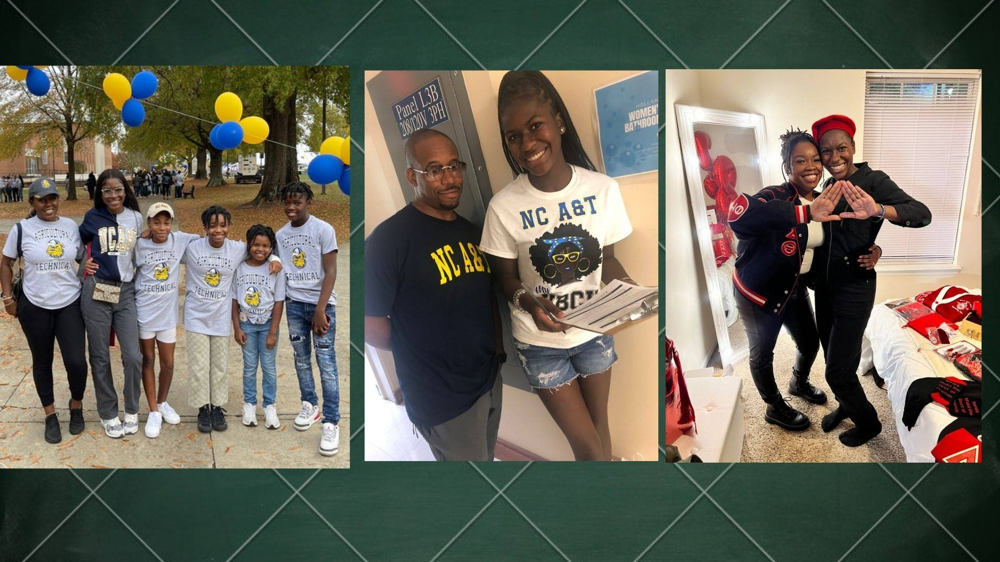
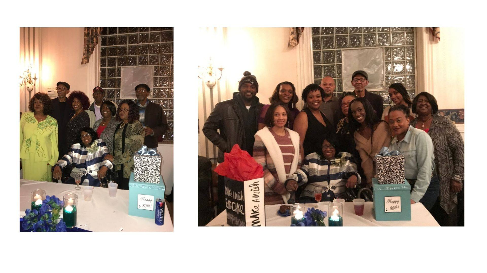
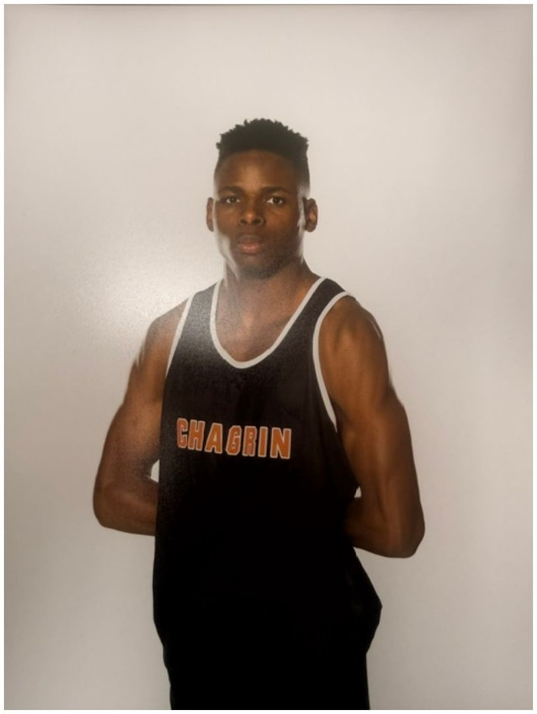
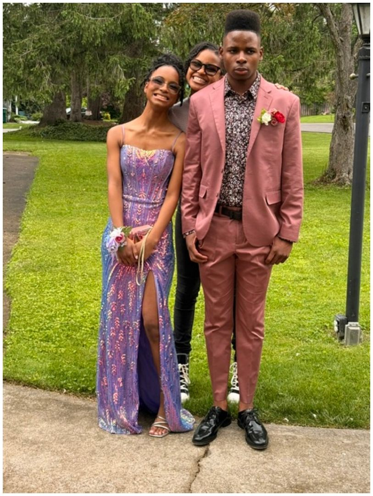
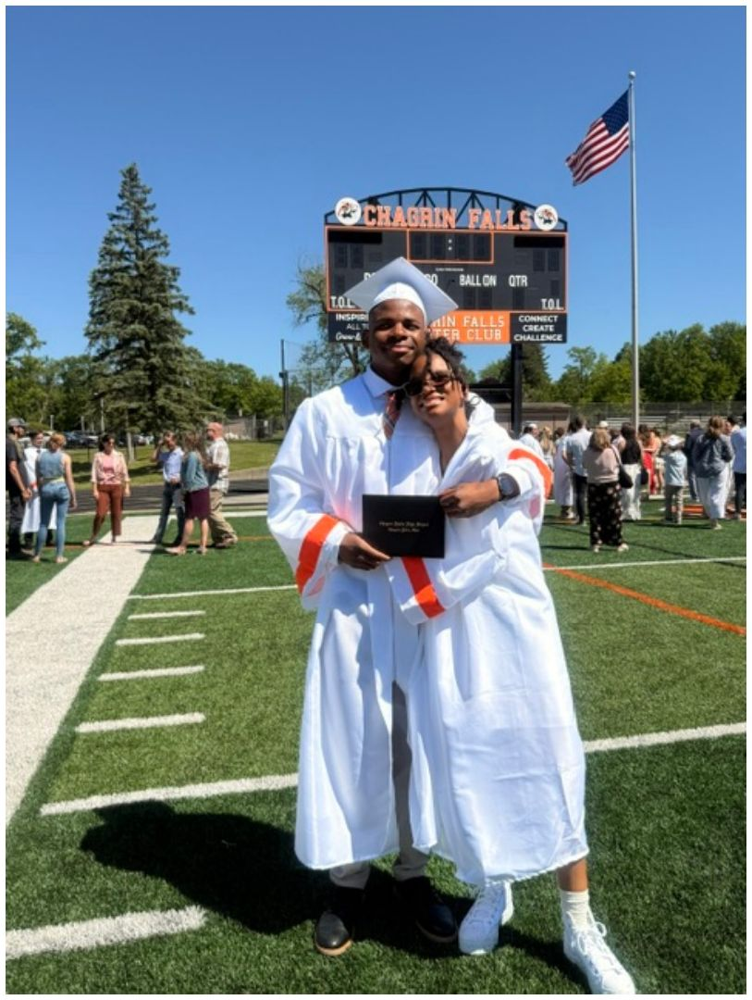
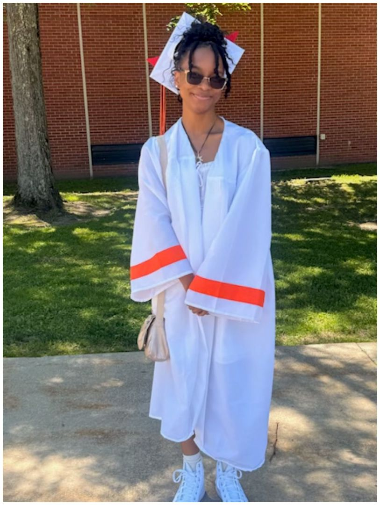
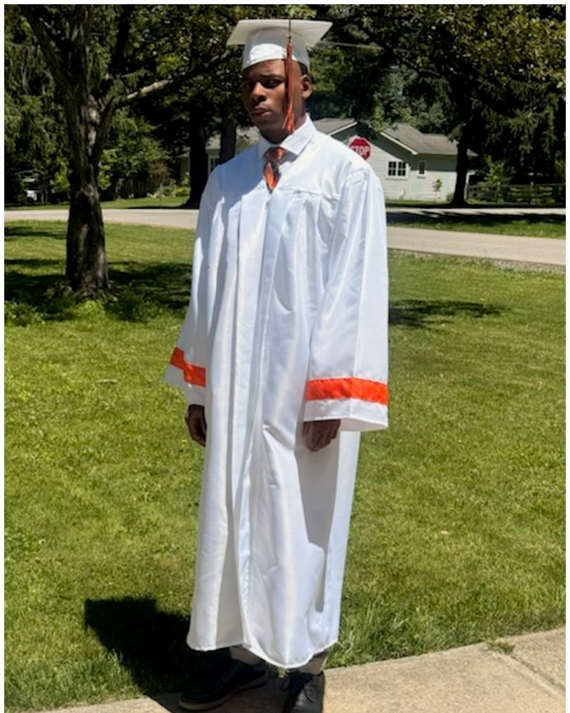

Our roots run deep — from Mississippi to Cleveland and beyond…
Cleveland, Ohio · July 17–19, 2026 · hnfamilyreunion.com
Use ← → arrow keys, tap, or the buttons to move through slides · Press P to print the whole deck
This reunion started when Mr. John Harris and Ms. Judy Bender united a long time ago. Both were born in the late 1800s — he was a farmer, and she was a homemaker.
Their union brought forth six children, four boys and two girls: Gussy, Pasty, Josh, A.C., D.B., and Will Harris.
"As I call your name, please stand with your family!"
Full family history: family history document · Photos & stories: Canva family album
Meet & Greet / Fish Fry
Andrews Osborne Park (in back)
38575 Lakeshore Blvd, Willoughby, OH 44094
Family Fun at Clay's Park
12951 Patterson St NW, North Lawrence, OH 44666
Brunch · Family History · Farewell
SiteCenters, 3333 Richmond Rd, Beachwood, OH
Shirts: $10 (2XL–4XL $15) — adult SM–4XL, youth SM–XL, toddler 6M–24M. Pick up shirts at the park Friday; wear them to Clay's Park Saturday.
John Harris & Judy Bender (born late 1800s) — six children: Gussy, Pasty, Josh, A.C., D.B., and Will Harris.
Emma (Bently) Moncrief (1867–1954) & Ed Moncrief had 16 children. Out of these 16, Mandy Moncrief (c. 1900–1986) was born. Mandy married Nelson Price (b. 1894) and blessed us with Lela Mae Price (July 16, 1922 – February 15, 1996).
Lela Mae Price married Dennis Bernard "D.B." Harris — three girls: Mary Nelson, Mildred Lucile Harris (1942–2012), Jessie Mae Harris-Moore. She later married Floyd Nelson and had six more children: James Edward, James Earl (mom liked the name James!), Floyd Nelson Jr, Mary Jane Harris (Gray), Mandy Louise Ellis, and the baby of the bunch, Shirley Harris.
Charlie Nelson & Mandy Harris brought forth two boys: Floyd Nelson (the oldest) and Joe Nelson. Joe married Oreatha Ward — four children: Doris Joe Smith, Mandy Mary Thomas, Charles Nelson, and the baby, Naiomi Matthews.
Dates verified against our Ancestry family tree (updated July 2026). This family history was brought to you by Yours Truly — That Aunt 💛 · Mildred's branch has its own interactive tree: website/mildred-tree.html — her family is in the house this weekend! 🌳
Lela Mae's children, and the branches that grew from each one:
Numbers = children in each branch. Every branch keeps growing — that's what the Family Tree Project (later today) is for!
Tap or click a question to reveal the answer. Winners get bragging rights (and maybe a t-shirt).
Who founded this family, and what did he do for a living?
John Harris (married to Judy Bender) — he was a farmer; she was a homemaker.
How many children did Emma & Ed Moncrief have?
Sixteen!
What is Lela Mae Price's birthday?
July 16, 1922.
Which two brothers share a first name — and why?
James Edward & James Earl. Mom just liked the name James! 😄
Who is "the baby of the bunch"?
Shirley Harris.
Joe Nelson married whom, and how many children did they have?
Oreatha Ward — four children: Doris Joe Smith, Mandy Mary Thomas, Charles Nelson, and Naiomi Matthews.
Which branch has the most children?
Mary Nelson's branch, with 8.
In what year did Mary marry Willie Nelson?
1957.
More trivia rounds: Family History Trivia (email)
A yearbook for every reunion — portraits, superlatives, branch pages, recipes, and the year's biggest family moments. Everyone gets a page; every branch gets a spread.
Last year's reunion in Cleveland gave us 123 slides of memories — pool parties, portraits, the old-school photos, and every branch showing up and showing out.




All 123 slides play fullscreen on the Photos page of hnfamilyreunion.com — put it on the big screen during dinner. (In this kit: website/gallery.html → "Play the Slideshow".)
Send your photos from this weekend to harrisnelsonfamilyreunion@gmail.com — the Photography Committee builds the next slideshow and the yearbook from what you send.
Stand and be recognized! This year we celebrate…





[Add graduate names — high school, college, trade school, advanced degrees]
[Add babies born since our last reunion]
[Add couples and milestone anniversaries]
[Promotions, retirements, new businesses launched]
[Military service, awards, community honors]
[Honor our eldest family members present today]
Send accomplishments to harrisnelsonfamilyreunion@gmail.com so they make the yearbook too.
At every reunion, the family votes and we award the winners at the closing banquet — trophies, sashes, and a page in the yearbook. Vote by paper ballot at the welcome table or online at hnfamilyreunion.com.
Nominations open Friday at check-in · voting closes Saturday at 6 PM · one ballot per person (honor system + the Sergeant-at-Arms is watching 👀) · Hospitality counts the ballots and winners are announced at the banquet.
They are not gone — they are the roots beneath everything we do today. Please stand with us for a moment of silence.
[Add the names of loved ones lost, with branch and years — e.g. Jennifer, Lamar, and all those whose love built this family]
One representative from each of the nine branches lights a candle as their branch's names are read aloud.
A memorial page in the yearbook and on the website will keep their stories alive. Send photos and remembrances to harrisnelsonfamilyreunion@gmail.com.
Finances · Governance · Committees · Website · Land · Scholarships · Foundation
Dues collected to date (115 attending)
Dues still outstanding
Projected shortfall — let's close it this weekend!
| Expense | Amount | Status |
|---|---|---|
| Clay's Park pavilion | $700 | ✅ Paid 3/13/26 |
| Friday pavilion (Andrews Osborne) | $65 | ✅ Paid 3/1/26 |
| Clay's Park tickets — 93 @ $20 | $1,860 | Due |
| Sunday banquet space | $200 | Due |
| Sunday brunch catering | $2,600 | $1,734 paid 6/19 · $866.75 due |
| Estimated food — Friday / Saturday | $2,200 | Due |
| Total expenses | $7,625 | $2,499 paid · $5,127 remaining |
Dues to be collected in total: $7,215 — collecting the $1,675 outstanding leaves us just $410 short, which fundraising covers. Dues: $125 single (or w/ 1 minor) · $175 single + guest or college student · $225 family of 3+. See the Treasurer for your household's balance; every payment gets a receipt.
We are formalizing the reunion as an organization with elected officers, written duties, and orderly meetings.
| Office | Officer | Core duty |
|---|---|---|
| President | Miesha | Presides over meetings, sets agenda, speaks for the family organization |
| Vice President | Aunt Shirley | Presides in the President's absence; oversees committee chairs |
| Secretary | Marcelette | Minutes; takes attendance at every meeting; records, correspondence & meeting notices |
| Treasurer | Jasmine | Holds funds, pays approved expenses, presents financial report |
| Financial Secretary | Aunt Vanessa | Receives/records all money in, issues receipts, tracks dues |
| Historian | Shone | Family history, archives, yearbook, tree project |
| Hospitality Chair | Loretta | Leads the Courtesy Committee: welcome & comfort, elders' care, ushers & assigned tables, birthdays & accomplishments recognition, superlatives ballot count |
| Sergeant-at-Arms | Joseph | Keeps order at meetings & events; guards the door during business meetings (assisted by the Doorkeeper); safety coordination |
| Membership Chair | [Open — nominate today!] | Membership roll & recruitment; matches volunteers to committees so every chair has support |
| Parliamentarian | [Open — vote today!] | Advises the President on Robert's Rules during meetings; rules on points of order; makes sure motions, debate & elections follow procedure; chairs the Protocol Committee |
| Doorkeeper | [Open — vote today!] | Assists the Sergeant-at-Arms: checks members in at the door, controls entry & exit during votes and closed sessions, delivers messages without disrupting the meeting |
| Meditation Chair | [Open — vote today!] | Leads opening & closing prayers, gathers and lifts prayer requests, delivers the condolences report, coordinates memorials with the Services Committee |
A written Constitution & Bylaws (with Robert's Rules of Order as our parliamentary authority) is drafted and ready for review — we'll move to adopt it at this meeting. It sets terms, elections, quorum, dues, and committee rules. Copies at the welcome table and on hnfamilyreunion.com.
Robert's Rules keep meetings fair, short, and drama-free: one person speaks at a time, every voice gets heard, and decisions get made by vote — not by volume.
| You want to… | You say… |
|---|---|
| Propose something | "I move that…" |
| Support it | "Second!" |
| Change the wording | "I move to amend…" |
| End the debate | "I move the previous question" |
| Take a break | "I move to recess" |
| Wrap it up | "I move to adjourn" |
A one-page Robert's Rules quick guide will be posted on the website and handed out at every business meeting.
Miesha (President) · Aunt Shirley (Vice President) · Marcelette (Secretary) · Jasmine (Treasurer) · Aunt Vanessa (Financial Secretary) · Shone (Historian) · Loretta (Hospitality) · Joseph (Sergeant-at-Arms)
Stand and be recognized — this weekend exists because of your work.
[Add the names of everyone currently serving on a committee — they get recognized here]
The Membership Chair keeps the family roll, welcomes new members, and matches volunteers to committees. Nominate yourself or a cousin — the Secretary is taking names right now.
Eleven standing committees — nine need chairs, and every one needs 2–5 members. Courtesy is led by the Hospitality Chair and Protocol by the Parliamentarian. Sign up to chair (or join) any committee — right on this slide's sign-up sheet, at the welcome table, or online.
Chair: [sign up] · Members: [sign up]
Chair: [sign up] · Members: [sign up]
Chair: [sign up] · Members: [sign up]
Chair: [sign up] · Members: [sign up]
Chair: [sign up] · Members: [sign up]
Chair: [sign up] · Members: [sign up]
Chair: [sign up] · Members: [sign up]
Chair: [sign up] · Members: [sign up]
Chair: [sign up] · Members: [sign up]
Led by the Hospitality Chair (Loretta) · Members: [sign up] — welcome, elders' care, birthdays & accomplishments, cards & condolences
Chaired by the Parliamentarian · Members: [sign up] — Robert's Rules help, quorum & attendance with the Secretary, elections & ballots
The drive is about 930 miles, so the true halfway point lands around Nashville, TN / Bowling Green, KY. These lodges host reunions with rooms, cabins, banquet space, and catering all on one property:
The Planning Committee gets group-rate quotes from the top three picks (headcount, beds vs. banquet needs, time of year), and we choose by member vote — a motion, a second, and a show of hands. Decade planning means we can rotate: halfway one reunion, closer to each hub the next.
The Technology Committee will launch the site from the starter code already written (it's in our family GitHub repository — home page, history, tree form, committee form, shop, and giving pages, ready to customize). Email stays harrisnelsonfamilyreunion@gmail.com. Payments will run through a secure processor (Stripe/PayPal/Cash App) — no card numbers ever stored by us.
We are partnering with Where Is My Land (whereismyland.com) — an organization that helps Black families research, document, and reclaim land that was taken from them, through genealogical research, records work, advocacy, and legal pathways.
Exact percentages to be set by member vote today — chair, entertain a motion!
If our claim succeeds, recovered land/proceeds would be stewarded by the family foundation (501(c)(3) slides ahead).
A scholarship opportunity for descendants of our ancestors — college, trade school, certification programs.
Goal: award our first scholarship(s) at the next reunion. Amounts set by the budget the Treasurer presents.
Family takes care of family. Each reunion, we award aid to a member walking through a hard season — chosen by confidential application, not by who asks loudest.
Applications: hnfamilyreunion.com (Hardship Fund page) or paper from any officer — handed directly to the committee. Award amount set by the Treasurer's budget each cycle: $[vote today]. Funded alongside the scholarship fund from our fundraising split.
In the next few months we will form a nonprofit foundation so donations are tax-deductible and our scholarship, land, and legacy work has a permanent legal home.
Nominations open today — see the Secretary. We'll ratify the founding board by motion and vote under Robert's Rules.
We have an Ancestry family tree already started. Throughout the reunion weekend, add yourself, your children, and your line — then we'll print a large family tree poster with everyone on it.
📱 Online: the Family Tree Google Form — or the matching form on hnfamilyreunion.com
📝 Paper: forms at the Family Tree table all weekend
Print the QR code on table tents so every table can scan it.
| What | Where |
|---|---|
| Family website | hnfamilyreunion.com (launching soon) |
| Family email | harrisnelsonfamilyreunion@gmail.com |
| Family history trivia | trivia email |
| Family yearbook post | x.com/tendin2 |
| History & yearbook doc | Google Doc |
| Photos & stories album | Canva album |
| Family tree form | Google Form |
| Land-back partner | whereismyland.com |
Sign a form. Chair a committee. Add your branch to the tree.
See you at the next reunion — bigger, better, and on our own land.
Harris-Nelson Family Reunion · hnfamilyreunion.com · harrisnelsonfamilyreunion@gmail.com